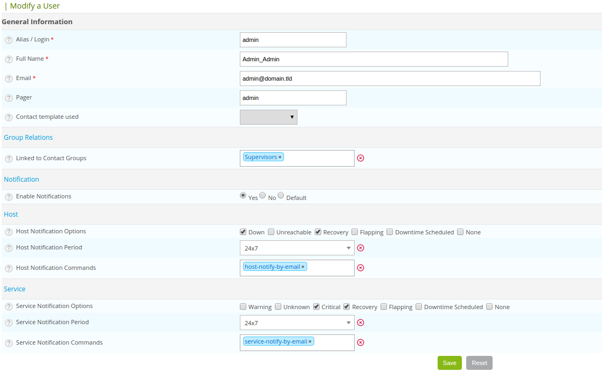

Contacts¶
Definition¶
The contacts in Centreon are used to:
- Log in to the Centreon web interface: each contact has its own rights of connection to the web interface.
- Be warned in case of necessity (notification).
To add a contact, simply go to the menu: Configuration ==> Users ==> Add.
To display the matrix of notification of a contact, click on View contact notifications next to the Add menu).
General information¶
- The Alias/Login field defined the login to access the web interface.
- The Full Name field contains the name and first name of the user.
- The EMail and Pager fields contain respectively the e-mail address and the telephone number of the user (in the case of a notification by SMS or call for instance).
- The field Contact template used allows us to link the contact to a Model of contact.
- The Linked to Contact Groups list associated the contact to one or more groups of contacts.
- The Enable Notifications field allows us to enable the sending of notifications to the user.
- The Host / Service Notification Options field serves to define the statuses to which notifications are sent.
- The Host / Service Notification Period field serves to choose the time period in which notifications are sent.
- The Host / Service Notification Command field serves to choose the notification command to a host or a service.
Centreon authentication¶
The Reach Centreon Front-end field serves to authorize the user to access the Centreon web interface.
The Password and Confirm Password fields contain the user password.
The Default Language field serves to define the language of the Centreon interface for this user.
The Admin field defined if this user is the administrator of the supervision platform or not.
The Autologin key serves to define a connection key for the user. The user will no longer need to enter his / her login and password but will use this key to log in directly. Connection syntax:
http://[IP_DU_SERVER_CENTRAL]/index.php?autologin=1&useralias=[login_user]&token=[value_autologin]
Note
The Possibility of automatic connection (auto login) should be enabled in the menu: Administration ==> Options.
- The Authentication Source field specifies if the connection information comes from an LDAP directory or information stored locally on the server.
- The Access list groups field serves to define an access group to a user (group use for access control (ACL)).
Note
A Administrative user is never concerned by access control even linked to an access group.
Additional information¶
- The Address fields allow us to specify the data of additional contacts (other e-mails, other telephone numbers, etc.).
- The Status and Comment fields serve to enable or disable the contact and to make comments on it.